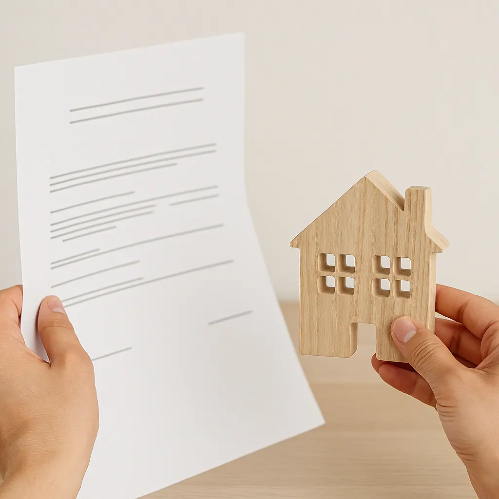

11. 3. 2026
Mají větrné elektrárny vliv na cenu nemovitostí? Zamyšlení nad daty, studiemi a realitní praxí
Když se v obci začne mluvit o větrných elektrárnách, rychle se objeví i otázka, která zajímá majitele domů, bytů i pozemků: klesne kvůli nim hodnota nemovitosti?
Na první pohled se může zdát, že odpověď bude jednoduchá. Jenže čím víc se člověk do tohoto tématu ponoří, tím víc zjišťuje, že realita není černobílá. Vedle emocí a obav je totiž potřeba dívat se i na data, konkrétní lokalitu a skutečné chování trhu. Přesně to ukazují i novější studie: neexistuje jedno pravidlo, které by šlo automaticky použít na každou obec a každou nemovitost.
Proč tohle téma vzbuzuje tolik emocí
Je to pochopitelné. Nemovitost bývá pro většinu lidí jedním z největších životních majetků. Jakákoli větší změna v okolí proto přirozeně vyvolává otázky. Lidé řeší výhled, krajinu, klid, budoucí zájem kupujících i to, jestli se jejich dům nebo pozemek nestane hůře prodejným.
Právě tady ale často vzniká problém. Ve veřejné debatě se složitá věc zjednoduší do jedné věty: buď že větrné elektrárny cenu nemovitostí vždy snižují, nebo že nemají žádný vliv. Jenže odborné podklady ukazují, že pravda bývá mezi těmito dvěma krajnostmi.
Co říkají zahraniční studie
Rozsáhlá metaanalýza publikovaná v roce 2024 v časopise Environmental and Resource Economics spojila 720 odhadů z 25 studií a ukázala, že výsledky se výrazně liší podle metodiky i místních podmínek. Sama studie zdůrazňuje, že v odborné literatuře nepanuje shoda a že případný vliv je potřeba hodnotit opatrně.
Podobně vyznívá i americká studie zveřejněná v PNAS v roce 2024. Ta zjistila, že vizuální přítomnost větrných turbín může být spojena s menším poklesem hodnoty domů v těsné blízkosti, ale tento efekt se snižuje s časem i vzdáleností. Jinými slovy: když se nějaký dopad objeví, nebývá plošný ani stejně silný všude.
Další důležitá americká studie v Energy Policy zjistila, že domy do jedné míle od nově oznámeného projektu zaznamenaly po oznámení pokles hodnoty, ale po výstavbě se ceny postupně zotavovaly. U domů vzdálených více než dvě míle se vliv neprokázal. Autoři zároveň upozorňují, že výsledky byly taženy hlavně projekty v hustěji osídlených okresech.
Co z toho plyne
Když se na tyto studie člověk podívá bez emocí, vychází z nich poměrně střízlivý závěr. Větrné elektrárny mohou v některých případech cenu nemovitostí ovlivnit, ale zpravidla nejde o automatický a plošný propad hodnoty všech domů a pozemků v okolí.
Důležitá bývá hlavně vzdálenost, viditelnost, charakter krajiny, hustota zástavby i to, jak dané místo působí na kupující. Právě proto se výsledky studií liší. Ne proto, že by jedna strana měla úplně pravdu a druhá se mýlila, ale proto, že různé lokality reagují různě.
Co ukazují česká data
Pro české prostředí je důležité, že už existuje i domácí analýza založená na datech z katastru nemovitostí za období 2014 až 2024. Tato studie porovnávala šest dvojic typově srovnatelných obcí, vždy jednu s větrnými elektrárnami a jednu bez nich. Její závěr byl poměrně jasný: přítomnost větrných elektráren neměla statisticky významný negativní dopad na ceny nemovitostí v okolních obcích.
V souhrnu byly ceny v obcích s větrnými elektrárnami dokonce o 4,99 % vyšší než v obcích bez nich, konkrétně 20 870 Kč/m² oproti 19 879 Kč/m², ale tento rozdíl nebyl statisticky významný. Stejně tak se nepotvrdil ani významný rozdíl v tempu růstu cen: v obcích s větrnými elektrárnami činil průměrný růst 6,13 %, zatímco v obcích bez nich 6,96 %. Autoři studie proto uzavírají, že sledovaná hypotéza o negativním vlivu se v českém souboru nepotvrdila.
Co to znamená pro realitní praxi
Právě tady je podle mě důležité se zastavit. Nemovitosti nejsou tabulka, do které se dá doplnit jedna proměnná a vyjde jednoznačný výsledek. Hodnotu domu nebo pozemku vždy tvoří souhra více věcí: poloha, stav, občanská vybavenost, dopravní dostupnost, výhled, soukromí, atmosféra místa i aktuální poptávka.
Proto není poctivé říct, že samotná přítomnost větrné elektrárny automaticky sníží cenu každé nemovitosti v okolí. Stejně tak ale není úplně přesné tvrdit, že nemůže hrát žádnou roli. V některých konkrétních případech roli hrát může. Jen je potřeba dívat se na každou nemovitost jednotlivě a v širším kontextu. Tento závěr odpovídá jak zahraničním studiím, tak české analýze.
Možná nejdůležitější otázka
Možná není nejdůležitější otázkou to, jestli větrné elektrárny cenu nemovitostí ovlivňují ano, nebo ne. Možná je důležitější ptát se, za jakých podmínek, v jaké míře a u jakého typu nemovitosti.
Právě v tom bývá největší rozdíl mezi rychlým názorem a poctivým realitním pohledem. Trh totiž většinou nereaguje na jednu věc izolovaně. Reaguje na celek.
Závěr
Tohle téma podle mě dobře ukazuje, že u nemovitostí málokdy fungují jednoduché soudy. Větrné elektrárny mohou v některých případech hrát roli, ale samy o sobě ještě neříkají všechno. O výsledné hodnotě nemovitosti vždy rozhoduje širší souvislost, konkrétní místo a pohled trhu.
A právě proto má smysl nepodléhat rychlým závěrům, ale dívat se na podobné otázky s nadhledem, znalostí souvislostí a respektem k datům.
Slyším díky technice. Rozumím díky srdci. Slyším váš domov.
Pokud řešíte hodnotu své nemovitosti nebo přemýšlíte, jak může okolní vývoj ovlivnit její prodejnost, podívám se s vámi na situaci lidsky i odborně.
Více najdete na www.tomasveigl.cz
Zdroje a použité studie
- Marvin Schütt: Wind Turbines and Property Values: A Meta-Regression Analysis, Environmental and Resource Economics, 2024.
- Wenz Guo a kol.: The visual effect of wind turbines on property values is small and diminishing in space and time, PNAS, 2024.
- Eric J. Brunner, Ben Hoen, Joe Rand, David Schwegman: Commercial wind turbines and residential home values: New evidence from the universe of land-based wind projects in the United States, Energy Policy, 2024.
- Vliv větrných elektráren na ceny nemovitostí v Česku, studie zveřejněná Komorou OZE, založená na datech z katastru nemovitostí za období 2014–2024.
Blog
Další články
Daň z prodeje nemovitosti v roce 2026
Prodej bytu, domu nebo pozemku obvykle znamená velké rozhodnutí a nemalé peníze. Právě proto mě klienti často oslovují s otázkou: „Budu muset z prodeje nemovitosti platit daň?“ Odpověď není vždy stejná. Záleží na tom, ja
Největší riziko pronájmu nevzniká v bytě. Vzniká mezi lidmi.
Když se řekne problém s pronájmem bytu, většina majitelů si představí hlavně poškozený byt, nezaplacený nájem, rozbitou kuchyňskou linku nebo nájemníka, který se nechce vystěhovat. Ano, i to se může stát. Ale z mé zkušen

Zvýšení nájmu krok za krokem: Co může pronajímatel a co už ne
Zvýšení nájmu má jasná pravidla. Kdy a o kolik může pronajímatel nájem navýšit, aby vše bylo podle zákona a bez zbytečných sporů? Přehledně krok za krokem.